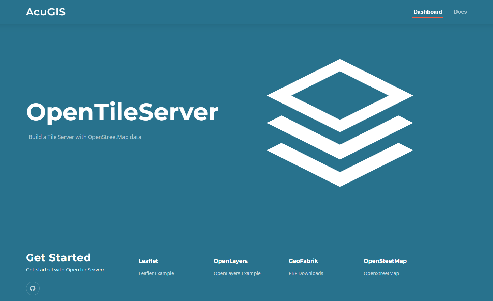

OpenTileServer
latest
Getting Started
Intro
Installation and Usage
OpenTileServer
Docs
»
OpenTileServer
Edit on GitHub
OpenTileServer
¶

Getting Started
Intro
Overview
Features
Authors
Components
Installation and Usage
Installation
Options
Examples
Using SSL
Welcome Page
Contribute
Support
License
AcuGIS
¶
AcuGIS
Cited, Inc.
Read the Docs
v: latest
Versions
latest
stable
Downloads
pdf
html
epub
On Read the Docs
Project Home
Builds
Free document hosting provided by
Read the Docs
.